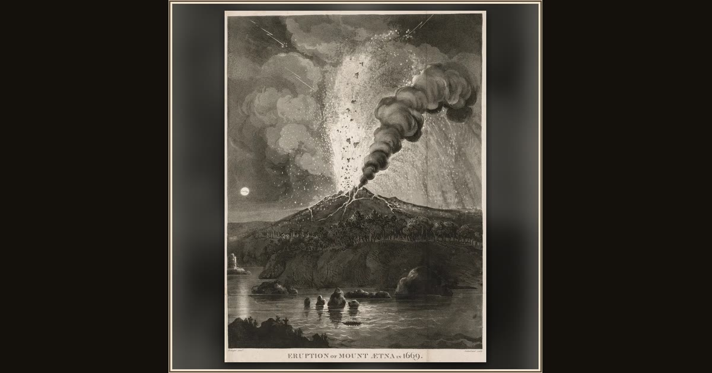

Eruption of Mount Aetna in 1669
Thomas Sutherland (British, 1785–1838); Romagni (Italian?, 17th century?); Robert John Thornton (British, 1768–1837) · 1809 · cma
A print of Mount Etna erupting in 1669 shows fire and smoke rising from its summit; Thucydides describes a stream of fire that destroyed Catanian land (3.116.1) Explore its place in Thucydides's History of the Peloponnesian War, Book III, chapter 468.